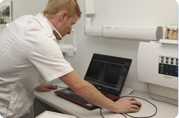
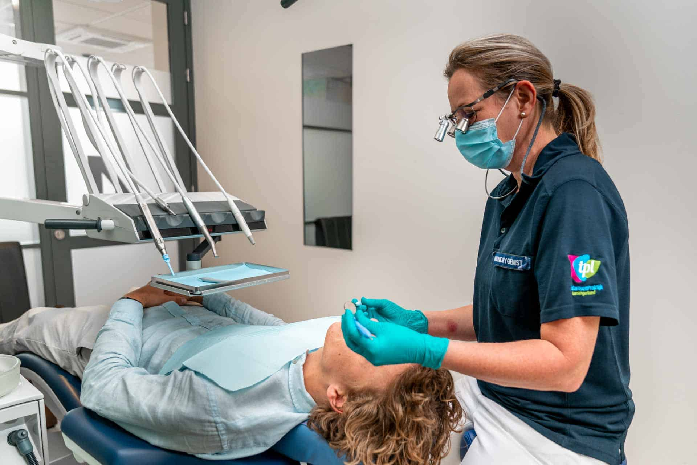
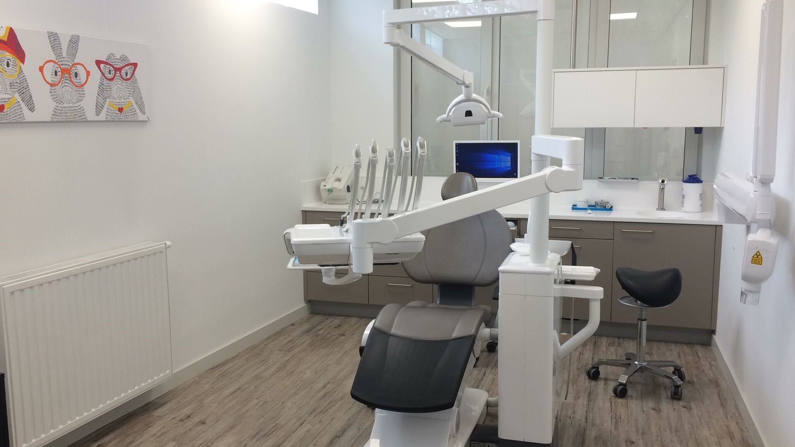

Tandartspraktijk Bonnez Terneuzen
Wij zorgen ervoor dat U uw glimlach opnieuw kan gebruiken.
Het team van Tandartspraktijk Bonnez in Terneuzen bestaat uit drie tandartsen, een paro/preventieassistente en acht assistentes.
- Alle tandartsen die bij ons werken hebben een BIG-registratie.
- Wij zijn in de overtuiging dat Iedereen met evenveel zorg en kwaliteit behandeld moet worden.
- Ons team bestaat alleen uit mensen die door ons eerst getest zijn op zowel hun bekwaamheid als tandarts als op hun interactie met mensen
- Onze medewerkers zoeken steeds, in overleg met U, naar de beste oplossing en dat betekent niet per definitie ook de duurste.
Onze tandartsen bekijken en onderzoeken welke mogelijke behandelingen er zijn om u van uw klachten of aandoening af te helpen of deze te verminderen.
- We bespreken samen met U de verschielen in prijzen en kwaliteitsniveau's.Zo bieden we altijd een optimale oplossing voor uw gebit en uw portemonnee.
Meer informatie over onze tandartspraktijk in Terneuzen
Wij hopen u alvast te mogen begroeten.
Tandartspraktijk Terneuzen
Drs. Bonnez Jimmy

Drs. Bonnez Jimmy

Check up.

Werkruimte
Tandartsafspraak